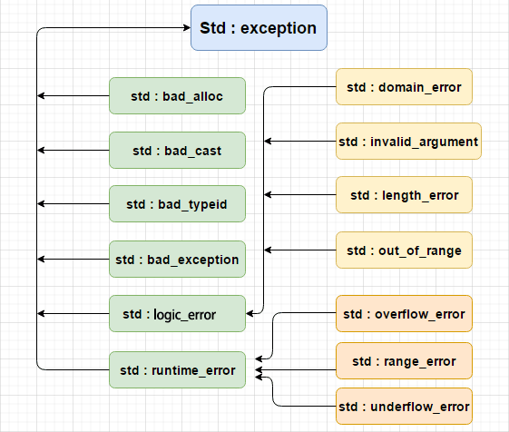

一、try、catch、throw
- 可以使用 throw 语句在代码块中的任何地方抛出异常。throw 语句的操作数可以是任意的表达式，表达式的结果的类型决定了抛出的异常的类型
- C++ 异常机制是跨函数的，且是必须处理的。如果中间函数没有处理就一直抛到最顶层，如果 main 函数也不处理，程序就会挂掉
int main( )
{
try{
throw "exception";
}catch(const char * e){
cout << e << endl;
}catch(...){ // 捕获所有异常
cout << "..." << endl;
}
{
cout << "finally" << endl;
}
return 0;
}
输出：
Start
exception
finally
0
Finish
二、std::exception
class exception {
public:
exception() throw();
exception(const exception& rhs) throw();
exception& operator=(const exception& rhs) throw();
virtual ~exception() throw();
virtual const char *what() const throw();
};
派生了两个异常类：
| 类名 | 描述 |
|---|---|
| logic_erro | 报告程序的逻辑错误，可在程序执行前被检测到 |
| runtime_erro | 报告程序运行时的错误，只有在运行的时候才能检测到 |
由logic_erro派生的异常类：
| 类名 | 描述 |
|---|---|
| domain_error | 报告违反了前置条件 |
| invalid_argument | 指出函数的一个无效参数 |
| length_error | 指出有一个产生超过NPOS长度的对象的企图（NPOS为size_t的最大可表现值 |
| out_of_range | 报告参数越界 |
| bad_cast | 在运行时类型识别中有一个无效的dynamic_cast表达式 |
| bad_typeid | 报告在表达式typeid(*p)中有一个空指针P |
由runtime_error派生的异常：
| 类名 | 描述 |
|---|---|
| range_error | 报告违反了后置条件 |
| overflow_error | 报告一个算术溢出 |
| bad_alloc | 报告一个存储分配错误 |


三、自定义异常
可以通过继承和重载 exception 类来定义新的异常
struct MyException : public exception
{
const char * what () const throw () // 表明没有任何异常抛出
{
return "C++ Exception";
}
};
int main()
{
try
{
throw MyException();
}
catch(MyException& e)
{
cout << "MyException caught" << endl;
cout << e.what() << endl;
}
catch(std::exception& e)
{
//其他的错误
}
catch(...)
{
cout << "..." << endl;
}
{
cout << "finally" << endl;
}
return 0;
}
Start
MyException caught
C++ Exception
finally
0
Finish